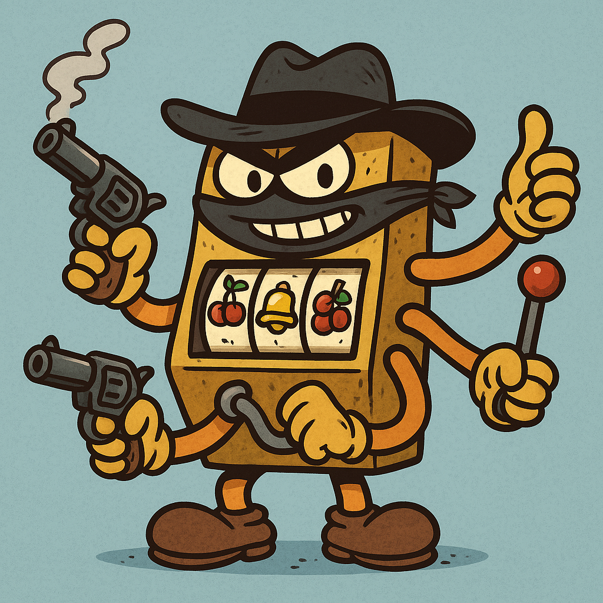

CS 463G & CS 663
(Intro to) AI
Lecture 31: Multi-Armed Bandits
Fall 2026
Three tutorial recommendations have different, unknown chances of receiving a useful rating.
Would you always recommend the option with the highest average rating so far, even if another has been tried only once?
Multi-armed bandits (MABs) isolate a central reinforcement learning (RL) dilemma: explore uncertain actions or exploit current knowledge.

A multi-armed bandit has:
The basic model has no changing state or context. You observe the reward only for the arm you choose.
| Application | Arm | Reward |
|---|---|---|
| Tutorial selection | Tutorial variant | Useful rating |
| Online ads | Ad variant | Click or conversion |
| Recommendation | Item | Engagement |
| Games | Strategy | Score |
Common structure:
Recommendations happen online, so learning and acting are intertwined.
At time t:
In today’s stationary stochastic model, each arm has a fixed reward distribution with unknown mean \mu_a.
Goal over horizon T:
\max \mathbb{E}\left[\sum_{t=1}^T R_t\right]
Choose the arm with the highest estimated value.
Good short-term reward.
Try uncertain arms to learn more.
Potentially better long-term reward.
Exploit too early and you may miss the best arm; explore too much and you waste reward.
| Bandits | Reinforcement learning |
|---|---|
| No state transitions | Actions affect future states |
| Immediate reward | Delayed consequences |
| Learn action values | Learn policies or value functions |
| Core exploration problem | Exploration plus sequential planning |
Before round t, N_t(a) is the number of times arm a has been pulled.
Q_t(a)\approx\mu_a
Sample average:
Q_t(a)= \frac{\sum_{i=1}^{t-1}\mathbf{1}\{A_i=a\}R_i}{N_t(a)},\qquad N_t(a)>0.
Incremental update:
Q_{t+1}(a)=Q_t(a)+\frac{R_t-Q_t(a)}{N_t(a)+1},\qquad a=A_t.
Only the selected arm’s estimate and count change.
One arm produced rewards 1,0,1,1. Its sample mean is 3/4=0.75.
The next reward is 0:
N_{\text{new}}=5,\qquad Q_{\text{new}}=0.75+\frac{0-0.75}{5}=0.60.
If the following reward is 1, what is the next estimate?
Q_{\text{next}}=0.60+\frac{1-0.60}{6}=\frac46\approx0.667. The incremental update matches recomputing the average from all six rewards.
Always choose:
A_t=\arg\max_a Q_t(a)
Pros:
Cons:
Suppose each arm is tried once before greedy selection starts.
| Arm | True mean, hidden from learner | First reward | Initial estimate |
|---|---|---|---|
| A | 0.4 | 1 | 1 |
| B | 0.6 | 0 | 0 |
| C | 0.8 | 0 | 0 |
Pure greedy keeps choosing A. Its sample mean stays positive at every finite step because of the first success, while B and C stay at zero.
Exploration samples uniformly from all arms, including the current best.
Let k=3, \epsilon=0.15, and suppose A is the unique greedy arm.
P(A)=1-\epsilon+\frac{\epsilon}{k}=0.85+0.05=0.90. P(B)=P(C)=\frac{\epsilon}{k}=0.05.
Why is the probability of selecting A larger than 1-\epsilon?
Exploration can also select A. The probability of exploring and the probability of choosing a nongreedy arm are different.
Upper confidence bound (UCB) adds an uncertainty bonus:
A_t= \arg\max_a \left[ Q_t(a)+c\sqrt{\frac{\ln t}{N_t(a)}} \right]
| Term | Role |
|---|---|
| Q_t(a) | Exploitation |
| \sqrt{\ln t/N_t(a)} | Exploration bonus |
| c | Exploration strength |
Try each arm once first so N_t(a)>0. Here \ln is the natural logarithm.
Before round t=11, ten pulls have produced these statistics. Use c=1 and \ln 11\approx2.398.
| Arm | N_t(a) | Q_t(a) | \sqrt{\ln(11)/N_t(a)} | Total score |
|---|---|---|---|---|
| A | 6 | 0.500 | 0.632 | 1.132 |
| B | 3 | 0.333 | 0.894 | 1.227 |
| C | 1 | 0.000 | 1.549 | 1.549 |
UCB chooses C, although it has the lowest sample mean. One failure leaves substantial uncertainty about its true mean.
Scores above 1 are allowed. These are selection scores, not probabilities.
The dot is the estimate. The line extends to its UCB score in the preceding example.
This bonus shrinks with an arm’s pull count, but grows slowly with time if that arm remains ignored.
Rarely tried arms get larger bonuses; uncertainty shrinks as N_t(a) grows.
At round 11, choose C and observe reward 1.
N_{12}(C)=2 and Q_{12}(C)=0.5. Other estimates stay unchanged.
| Arm | Next score |
|---|---|
| A | 0.500+\sqrt{2.485/6}\approx1.144 |
| B | 0.333+\sqrt{2.485/3}\approx1.243 |
| C | 0.500+\sqrt{2.485/2}\approx1.615 |
Choose C again: its higher estimate outweighs the smaller bonus.
Regret measures reward missed relative to always choosing the best arm.
\operatorname{Regret}(T)=T\mu^*-\mathbb{E}\!\left[\sum_{t=1}^{T}R_t\right].
where:
Good bandit algorithms aim for low regret, not just good final estimates.
Let \Delta_a=\mu^*-\mu_a be the gap between arm a and the best mean.
\operatorname{Regret}(T)=\sum_a\Delta_a\,\mathbb{E}[N_{T+1}(a)].
For means (0.4,0.6,0.8) and a fixed 100-pull allocation:
| Arm | Pulls | Gap | Expected reward lost |
|---|---|---|---|
| A | 50 | 0.4 | 20 |
| B | 30 | 0.2 | 6 |
| C | 20 | 0 | 0 |
Total expected regret: 26. Expected reward: 80-26=54.
These are hypothetical fixed allocations, not results from a simulation.
| Allocation over (A,B,C) | Expected reward | Expected regret |
|---|---|---|
| (50,30,20) | 54 | 26 |
| (20,20,60) | 68 | 12 |
If two learners both identify C as best on the last round, did they perform equally well?
No. Learning cost includes the rewards missed along the way. A single lucky run also cannot establish which algorithm is better.
An old tutorial may become less useful after the course material changes.
Q_{\text{new}}(a)=Q_{\text{old}}(a)+\alpha\bigl[r-Q_{\text{old}}(a)\bigr].
For Q_{\text{old}}=0.8, r=0, and \alpha=0.2, the new value is 0.64.
Adapting to change requires continued exploration. Stationary-bandit guarantees do not automatically apply.
A tutorial that helps a beginner may not help an experienced student.
| Model | Information before acting |
|---|---|
| Basic bandit | One shared set of arm estimates |
| Contextual bandit | User or task features, then a context-dependent choice |
| Full RL | A state whose future can change because of the action |
If a recommendation changes what a student learns and therefore later decisions, what does a one-step bandit model leave out?
The long-term effect on the student’s state and future rewards.